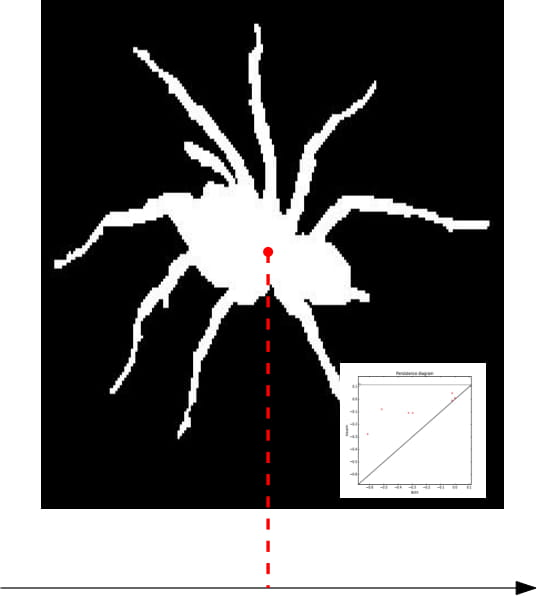

|
Python package for computing local signatures based on persistent homology. Programming language: C++, Python |

|
Cover complex package for the GUDHI library. Programming language: C++ |

|
sklearn-tda: a scikit-learn compatible Python package for TDA. Programming language: Python |
|  |
Tensorflow code for the NIPS 2017 Implementation Challenge. Programming language: C++, Python |

|
PersLay: a neural network layer for persistence diagrams. Programming language: Python |